화학분석기사(구) (2019-03-03 기출문제)
1과목: 일반화학
1. 질량 백분율(mass percentage)을 옳게 나타낸 것은?
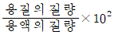
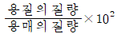
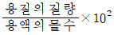
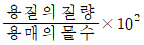
(정답률: 84%)

2. 아레니우스의 정의에 따른 산가 염기에 대한 설명 중 옳지 않은 것은?
- 산이란 물에 녹였을 때 하이드로늄이온(H3O+)의 농도를 순수한 물에서보다 증가시키는 물질이다.
- 염기란 물에 녹였을 때 수산화이온(OH-)의 농도를 순수한 물에서보다 증가시키는 물질이다.
- 19세기에 도입된 이 정의는 잘 알려진 산/염기와 화학적으로 유사한 화합물에는 적용되지 않는다.
- 순수한 물에는 적지만 같은 양의 수소이온(H+)과 수산화이온(OH-)이 존재한다.
(정답률: 83%)
3. 주기율표에 근거하여 제시된 다음의 설명 중 틀린 것은?
- NH3가 PH3보다 물에 더 잘 녹는 이유는 PH3와 달리 NH3가 수소결합을 할 수 있기 때문이다.
- 수용액 조건에서 HF, HCI, HBr, HI 중 가장 강산은 HI 이다.
- C는 O보다 전기음성도가 더 크므로 O-H결합보다 C-H결합이 더 큰 극성을 띠게 된다.
- Na와 Cl은 공유결합을 통해 분자를 형성하지 않는다.
(정답률: 73%)
4. 다음 유기물의 명명법 중 틀린 것은?
- CH3COOH : 아세트산
- HOOCCOOH : 옥살산
- CCI2F2 : 클로로플루오르 메탄
- CH2=CHCI : 염화비닐
(정답률: 79%)
5. 다음 중 밑줄 친 물질의 용해도가 증가하는 것은?
- 기체용질이 녹아있는 용기의 부피를 증가시킨다.
- 황산나트륨(Na2SO4)이 녹아있는 수용약의 온도를 60℃ 정도로 약간 올려준다.
- 황산비륨(BaSO4)이 들어있는 수용액에 NaCI을 소량 첨가한다.
- 염화칼륨(KCI) 포화용액을 냉장고에 넣는다.
(정답률: 54%)
6. 다음 중 알코올에 대한 설명으로 틀린 것은?
- 일반적으로 탄소의 개수가 작은 경우 극성이다.
- 작용기는 -OR (R은 알킬기)이다.
- 수소결합을 할 수 있다.
- 분자량이 비슷한 다른 유기분자보다 일반적으로 끓는점이 높다.
(정답률: 83%)
7. 525℃에서 다음 반응에 대한 평형상수 K 값은 3.35 × 10-3이다. 이 때 평형에서 이산화탄소 농도를 구하면 얼마인가?
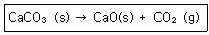
- 0.84 × 10-3mol/L
- 1.68 × 10-3mol/L
- 3.35 × 10-3mol/L
- 6.77 × 10-3mol/L
(정답률: 83%)
8. 주기율표에서의 일반적인 경향으로 옳은 것은?
- 원자 반지름은 같은 족에서는 위로 올라갈수록 증가한다.
- 원자 반지름은 같은 주기에서는 오른쪽으로 갈수록 감소한다.
- 금속성은 같은 주기에서는 오른쪽으로 갈수록 증가한다.
- 18족(0족)에서는 금속성 물질만 존재한다.
(정답률: 89%)
9. 산-염기에 대한 Brønsted-Lowry의 모델을 설명한 것 중 가장 거리가 먼 것은?
- 산은 양성자(H+ 이온)주개이다.
- 염기는 양성자(H+ 이온)받개이다.
- 염기에서 양성자가 제거된 화학종을 짝염기라고 한다.
- 산염기 반응에서 양성자는 산에서 염기로 이동된다.
(정답률: 84%)
10. 같은 질량의 산소분자와 메탄올에 들어있는 산소 원자 수의 비는?
- 산소 : 메탄올 = 5:1
- 산소 : 메탄올 = 2:1
- 산소 : 메탄올 = 1:2
- 산소 : 메탄올 = 1:1
(정답률: 76%)
11. Ca(HCO3)2에서 탄소의 산화수는 얼마인가?
- +2
- +3
- +4
- +5
(정답률: 75%)
12. 티오시아네이트(Thiocyanate) 이온(SCN-)의 가장 적합한 Lewis 구조는?
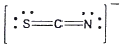

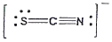
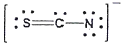
(정답률: 78%)
13. 배의 철 표면이 녹스는 것을 방지하기 위하여 종종 마그네슘 판을 붙인다. 이 작업을 하는 이유는?
- 마그네슘이 철보다 더 좋은 산화제이므로 마그네슘이 더 산화되기 쉽다.
- 마그네슘이 철보다 더 좋은 산화제이므로 마그네슘이 더 환원되기 쉽다.
- 마그네슘이 철보다 더 좋은 환원제이므로 마그네슘이 더 산화되기 쉽다.
- 마그네슘이 철보다 더 좋은 환원제이므로 마그네슘이 더 환원되기 쉽다.
(정답률: 80%)
14. 아세톤의 다른 명칭으로서 옳은 것은?
- dimethylketone
- 1-propanone
- propanal
- methylethylketone
(정답률: 75%)
15. 산소가 20mol%, 질소가 30mol%, 수소가 50mol%로 구성된 기채 혼합물의 평균 분자량은 얼마인가?
- 8.3g/mol
- 15.8g/mol
- 28.5g/mol
- 37.6g/mol
(정답률: 62%)
16. 헬륨의 원자량은 4.0 이다. 헬륨원자 1g속에 들어있는 원자의 개수는 몇 개인가?
- 1.5×1023개
- 6.02×1023개
- 2.4×1024개
- 4.8×1024개
(정답률: 86%)
17. 아보가드로의 수에 대한 설명 중 옳지 않은 것은?
- 아보가드로의 수는 일반적으로 6.02×1023이다.
- 아보가드로의 수는 정확히 12g에 존재하는 12C 원자의 숫자로 정의한다.
- 12C원자 한 개의 질량은 1.99×10-24g이다.
- 아보가드로수는 실험실에서의 거시적질량과 개별원자와 분자들의 미시적 질량 사이의 관련성을 확립하기 위한 것이다.
(정답률: 84%)
18. 다음 두 반응의 평형상수 K값은 온도가 증가하면 어떻게 되는가?
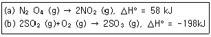
- (a), (b) 모두 증가
- (a), (b) 모두 감소
- (a) 증가, (b) 감소
- (a) 감소, (b) 증가
(정답률: 68%)
19. 0.10M NaCI 용액 20mL에 0.20M AgNO3 용액 20mL를 첨가하였다. 이 때 생성되는 염 AgCI의 용해도(g/L)는? (단, AgCI의 Ksp=1.0 × 10-10 분자량은 143이다.)
- 1.21 × 10-7 g/L
- 2.86 × 10-7 g/L
- 1.00 × 10-5 g/L
- 1.43 × 10-3 g/L
(정답률: 38%)
20. C6H14의 분자식을 가지는 화합물은 몇 가지 구조이성질체가 가능한가?
- 3
- 4
- 5
- 6
(정답률: 66%)
2과목: 분석화학
21. 13.58g의 tris(hydroxymethyl) aminomethane(분자량=121.14)와 5.03g의 tris hydrochloride(분자량=157.60)를 혼합한 수용액 100L에 1.00M염산 10.0mL을 첨사하였을 때의 pH는 약 얼마인가? (단, tris 짝산의 pKa = 8.072이다.)
- 7.43
- 7.85
- 8.46
- 9.27
(정답률: 39%)
22. 산-연기 적정에서 사용하는 지시약이 용액속에서 다음과 같이 해리한다고 한다. 만일 이 용액에 산을 첨가하여 용액의 액성을 산성이 되게 했다면 용액의 색깔은 어느 쪽으로 변화하는가?
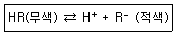
- 적색
- 무색
- 적색과 무색이 번갈아 나타난다.
- 알 수 없다.
(정답률: 72%)
23. EDTA 적정에 사용되는 xylenol orange 와 같은 금속이온 지시약의 일번적인 특징의 아닌 것은?
- pH 에 따라 색이 다소 변한다.
- 산화-환원제로서 전위(potential)에 따라 색이 다르다.
- 지시약은 EDTA 보다 약하게 금속과 결합해야만 한다.
- 금속이온과 결합하면 색깔이 변해야 한다.
(정답률: 63%)
24. pka가 5인 약산(HA) 1M 용액의 pH에 가장 가까운 것은?
- 2.3
- 2.5
- 3.0
- 3.3
(정답률: 56%)
25. 0.1M KNO3 와 0.⑤M Na2SO4 된 혼합용액의 이온세기는 얼마인가?
- 0.2
- 0.25
- 0.3
- 0.35
(정답률: 78%)
26. 산해리 상수(acid dissociation constant)에 관한 설명으로 틀린 것은?
- HA ⇄ H++A-의 평형상수에 해당한다.
- HA + H2O⇄ H3O++A-의 평형상수에 해당한다.
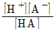
로 표현될 수 있다.- 산의 농도를 묽히면 산해리 상수는 작아진다.
(정답률: 76%)
27. 다음 염(salt)돌 중에서 물에 녹았을 떄, 염기성 수용액을 만드는 염을 모두 나타낸 것은?
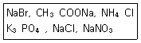
- CH3COONa, K3PO4
- CH3COONa
- NaBr, CH3COONa,NH4Cl
- NH4Cl, K3PO4, NaNO3
(정답률: 56%)
28. 미지시료 내의 특정 물질의 양을 분석하는 방법으로 적정이 사용된다. 적정의 요건으로 틀린 것은?
- 부반응이 없어야 한다.
- 반응이 진행되어 당량점부근에서 완결되어야 한다.
- 반응은 화학양론적이어야 한다.
- 적정에서의 반응은 느려도 크게 상관없다.
(정답률: 86%)
29. 분석물질이 EDTA를 가하기 전에 침점물을 형성하거나 적정조건에서 EDTA와 느리게 반응하거나, 지시약을 가로막는 분석물을 적합한 EDTA 적정법은?
- 직접적정
- 치환적정
- 간접적정
- 역적정
(정답률: 74%)
30. 용해도곱 상수와 공통이온 효과에 대한 설명으로 틀린 것은?
- 용해도곱 상수는 용해반응의 평형상수이다.
- 용해도곱이 클수록 잘 녹는다.
- 고체염이 용액 내에서 녹아 성분 이온으로 나누어지는 반응에 대한 평형 상수이다.
- 성분 이온들 중의 같은 이온하나가 이미 용액 중에 들어 있으면 공통이온효과로 인해 그 염은 잘 녹는다.
(정답률: 68%)
31. 이온 선택 전극에 대한 설명으로 옳은 것은?
- 이온 선택 전극은 착물을 형성하거나 형성하지 않은 모든 상태의 이온을 측정하기 떄문에 pH값에 관계없이 일정한 측정 결과를 보인다.
- 금속 이온에 대한 정량적인 분석 방벙 중 이온 선택 전극 측정 결과와 유도 결합 플라즈마 결합결과는 항상 일치한다.
- 이온 선택 전극의 선택 계수가 높을수록 다른 이온에 의한 방해가 크다.
- 액체 이온선택전극은 일반적으로 친수성 막으로 구성되어 있으며 친수성 막 안에 소수성 이온 운반체가 포함되어 있다.
(정답률: 40%)
32. 산화ㆍ환원 적정에서 사용되는 KMnO4에 대한 설명으로 틀린 것은?
- 진한 자주색을 띤 산화제이다.
- 매우 안정하여 일차표준물질로 사용된다.
- 강한 산성용액에서 무색의 Mn2+로 환원된다.
- 산성용액에서 자체지시약으로 작용한다.
(정답률: 75%)
33. 많은 종류의 이온성 침전물을 사용하여 무게분석을 할 때 순수한 물 대신에 전해질 용액으로 침전물을 세척하는 주된 이유는?
- 표면전하를 중화시켜 침전 입자들의 표면에 반발력 때문에 생기는 풀림 현상을 방지한다.
- 침전 형성 시 내포된 불순물들을 효과적으로 제거한다.
- 불순물 화학종이 침전되는 것은 방지하는 가림제의 역할을 한다.
- 전해질 환경에서 입자의 삭임과정이 촉징된다.
(정답률: 53%)
34. 1atm 의 값과 가장 거리가 먼 것은?
- 101.325KPa
- 1013mbar
- 760mmHg
- 14.7N/m2
(정답률: 80%)
35. 성분이온 중 한 가지 이상인 용액 중에 들어있는 경우 그 염의 용해도가 감소하는 현상을 공통이온 효과라고 한다. 다음 중 공통이온 효과와 가장 관련이 있는 원리 또는 법칙은?
- 비어(Beer)의 법칙
- 패러데이(Faraday) 법칙
- 파울리(Pauli)의 배타원리
- 르 샤틀리에 (Le Chatelier) 원리
(정답률: 82%)
36. 다음 염 중 용액의 pH를 낮추었을 떄 용해도가 증가하지 않는 것은?
- AgBr
- CaCO3
- BaC2O4
- Mg(OH)2
(정답률: 50%)
37. 전기화확 반은에 대한 설명 중 틀린 것은?
- 환원반응이 일어나는 전극을 개소드전극(cathode electrode)이라 하며, 갈바니 전지에서는 (-) 극이 된다.
- 염다리(salt bridge)에서는 전류가 이온의 이동에 의해서 흐르게 된다.
- 반쪽전지의 전위를 나타내는 값으로 표준환원전위를 나타내는 값으로 표준환원전위를 사용하며, 표준수소전극의 전위는 0.000V 이다.
- 전극반응의 전압은 Nernst식으로 표시되며, 갈바니 전지에서는 표준환원전위가 큰 반쪽반응의 전극이(+) 극이 된다.
(정답률: 67%)
38. 완층용액에 대한 설명 중 옳은 것으로만 무두 나열된 것은?
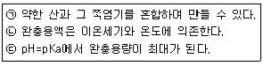
- ㉢
- ㉠, ㉡
- ㉠, ㉢
- ㉠, ㉡, ㉢
(정답률: 61%)
39. 국제단위계(SI)의 기본단위가 아닌 것은?
- 줄(J)
- 킬로그램(Kg)
- 초(s)
- 몰(mol)
(정답률: 70%)
40. 이온세기와 활동도, 활동도 계수에 대한 설명으로 옳은 것은?
- 활동도 계수의 단위는 mol/L 이다.
- 이온의 전화가 커질수록 활동도 보정은 필요없게 된다.
- 일반적으로 이온세기가 증가할수록 활동도 계수는 감소한다.
- 활동도 계수는 이온이 갖는 전하크기에 무관하다.
(정답률: 66%)
3과목: 기기분석I
41. FTIR(Fourier Transform Infrared; FT 적외선) 분광기기를 사용하여 측정한 흡광도 스펫트럽의 신호대 잡음비(signal-to-noise)가 4이었다. 신호대 잡음비를 20으로 증가시키려면 스펙트럼을 몇 번 측정하여 평균해야 하는가?
- 400
- 80
- 25
- 20
(정답률: 77%)
42. 인광이 발생하는 조건으로 가장 옳은 것은?
- 들뜬 단일항 상태에서 바닥상태로 되돌아 올 때
- 바닥 단일항 상태에서 들뜬 바닥상태로 되돌아 올 때
- 바닥 삼중항 상태에서 들뜬 단일항 상태로 되돌아 올 때
- 들뜬 삼중항 상태에서 바닥 단일항 상태로 되돌아 올 때
(정답률: 69%)
43. X선을 발생시키는 방법이 아닌 것은?
- 글로우 방전등에서 이온화된 아르곤이온의 충돌에 의해서
- 일차 X선에 물질을 노출시켜서 방사성 동위원소의 붕괴 과정에 의해서
- 방사성 동위원소의 붕괴 과정에 의해서
- 고에너지 전자살로 금속 과녁을 충돌시켜서
(정답률: 54%)
44. 원자분광법에서 고체 시료를 원자화하기위해 도입하는 방법은?
- 기체 분무기
- 글로우 방전
- 초음파 분무기
- 수소화물 생성법
(정답률: 69%)
45. NMR분광법에서 할로겐화 메틸(Ch3X)의 경우에 양성자의 화학적 이동 값(δ)이 가장 큰 것은?
- CH3Br
- CH3Cl
- CH3F
- CH3l
(정답률: 55%)
46. 다음 그래프와 같은 적외선 흡수스펙트럼을 나타낼 수 있는 화합물을 추정하였을 때 가장 적합한 것은?
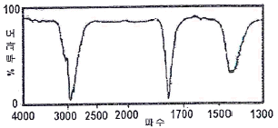
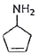
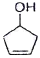
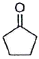
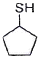
(정답률: 54%)
47. 불꽃 및 전열법과 비교한 ICP 원자화 방법의 특징에 대한 설명으로 틀린 것은?
- 하나의 들뜸 조건에서 대부분 원소들의 좋은 방출스펙트럼을 얻을 수 있다.
- 원소 상호간의 화학적 방해가 적다.
- 저렴한 장비를 사용하고 유지비가 적게 든다.
- 텅스텐, 우라늄, 지르코늄 같은 원소들의 낮은 농도를 측정할 수 있다.
(정답률: 75%)
48. 파장 500nm의 가시 복사선의 광자에너지는 약 몇 kJ/mol인가? (단, h=6.63×-34Jㆍs)
- 226 kJ/mol
- 239 kJ/mol
- 269 kJ/mol
- 300 kJ/mol
(정답률: 41%)
49. 원자 흡수분광법에서의 방해 중 스펙트럼 방해는 화학종의 흡수띠 또는 방출선이 분석선에 가까이 있거나 겹쳐서 발생한다. 스펙트럼 방해에 대한 설명으로 틀린 것은?
- 넓은 흡수띠를 갖는 연소생성물 또는 빛을 산란시키는 입자생성물이 존재할 때 발생한다.
- 시료 매트릭스에 의해 흡수 또는 산란될 때 발생한다.
- 낮은 휘발성 화합물 생성, 해리반응, 이온화와 같은 평형상태에서 발생한다.
- 스펙트럼 방해를 보정하는 방법에는 두선 보정법, 연속 광원 보정법, Zeeman 효과에 의한 바탕보정 등이 있다.
(정답률: 64%)
50. 투광도가 0.010인 용액의 흡광도는 얼마인가?
- 0.398
- 0.699
- 1.00
- 2.00
(정답률: 74%)
51. ㉮직경이 5.0cm이고 초점거리가 15.0인 렌즈 A의 스피드(f-number)와 ㉯직경이 30.0cm 이고 초점거리가 15.0cm인 렌즈 B의 스피드를 계산하고, ㉰이 둘의 집광력을 비교한 것은?
- ㉮ F=0.3 ㉯ FB=2 ㉰ A가 B보다 6.7배 집광력이 좋다.
- ㉮ F=0.3 ㉯ FB=2 ㉰ B가 A보다 6.7배 집광력이 좋다.
- ㉮ F=3.0 ㉯ FB=0.5 ㉰ A가 B보다 36배 집광력이 좋다.
- ㉮ F=3.0 ㉯ FB=0.5 ㉰ B가 A보다 36배 집광력이 좋다.
(정답률: 53%)
52. 자외선-가시선 흡수 분광법에서 사용하는 파장범위는?
- 0.1~100Å
- 10~180nm
- 190~800nm
- 0.78~300μm
(정답률: 75%)
53. 전형적인 분광기기의 구성장치가 아닌 것은?
- 안정적인 복사에너지 광원
- 시료 및 표준용액의 자동 이송장치
- 제한된 스펙트럼 영역을 제공하는 장치
- 복사에너지를 신호로 변환시키는 복사선 검출기
(정답률: 71%)
54. 자외선-가시선 흡수분광법에서 일반적으로 사용되는 광원의 종류가 아닌 것은?
- 증수소 및 수소 등
- 텅스텐 필라멘트 등
- 크세논 아크 등
- 전극없는 방전 등
(정답률: 64%)
55. 다음 어떤 경우에 원자가 가시광선 및 자외선 빛을 방출하는가?
- 전자가 낮은 에너지 준위에서 높은 에너지 준위로 뛸 때
- 원자가 기체에서 액체로 응축될 때
- 전자가 높은 에너지 준위에서 낮은 에너지 준위로 뛸 때
- 전자가 바닥상태에서 원자 궤도함수 안을 돌아다닐 때
(정답률: 74%)
56. 정량분석 시 반드시 필요한 표준몰 검정법 중 매트릭스 효과가 있을 가능성이 있는 복잡한 시료를 분석할 때 특히 유용한 방법은?
- 검정곡선법
- 표준물첨가법
- 작업곡선법
- 내부표준물법
(정답률: 71%)
57. l2 에탄올(CH3CH2OH)에 용해시켜 밀도가 0.8g/cm3인 용액을 제조하였다. 이 용액을 폭이 1.5cm인 셀에 넣고 Mo의 Ka 광원의 복사선을 투과시키니, 그 투과도가 25.0%였다. I, C, H, O의 각각의 질량흡수계수(cm2/g)가 차례로 39.0, 0.70, 0.00, 0.50이라 할 때 이 용액의 l2함량을 구한 결과 가장 근사치인 것은? (단, 용매에 의한 흡수도는 매우 낮으므로 무시한다.)
- 0.65%
- 1.⑤%
- 1.3%
- 3.6%
(정답률: 38%)
58. 에틸알콜의 NMR 스펙트럼에서 메틸기의 다중선 수는?
- 1개
- 2개
- 3개
- 4개
(정답률: 62%)
59. 다음 중 NMR 용매로 가장 적합한 것은?
- H2O
- CCl4
- HCl
- H2NO3
(정답률: 75%)
60. 원자 방출분광법의 유도쌍플라스마 광원에 대한 설명으로 틀린 것은?
- 광원은 헬륨 기체가 주로 이용된다.
- 전형적인 광원은 3개의 동심원통형 석영관으로 되어 있는 토치구조이다.
- 시료 도입 방법은 일반적으로 집중 유리 분무기를 사용한다.
- 플라스마 속으로 고체와 액체 시료를 도입하는 방법으로 전열증기화가 있다.
(정답률: 50%)
4과목: 기기분석II
61. 전기분해전지에서 구리가 석출되게 하였다. 1.0A의 일정한 전류를 161분 동안 흐르게 하였다면 생성물의 양은 약 몇 g인가? (단, 구리의 원자량은 64g/mol이다.)
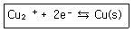
- 1.6g
- 3.2g
- 6.4g
- 12.8g
(정답률: 60%)
62. 고성능 액체크로마토그래피에서 사용되는 컬럼에 대한 설명으로 틀린 것은?
- 용리액 세기가 증가할수록 용질은 컬럼으로부터 더욱 빨리 용리된다.
- 액체크로마토그래피에서는 열린관 컬럼이 적당하다.
- 정지상 입자의 크기가 작을수록 충전컬럼의 효율은 증가한다.
- 컬럼의 온도를 높이면 머무름 시간이 감소되고, 분리도를 향상시킬 수 있다.
(정답률: 43%)
63. 액체크로마토그래피에서 기울기용리(gradient elution)란 어떤 방법인가?
- 컬럼을 기울여 분리하는 방법
- 단일 용매(이동상)를 사용하는 방법
- 2개 이상의 용매(이동상)를 다양한 혼합비로 섞어 사용하는 방법
- 단일 용매(이동상)의 흐름량과 흐름속도를 점차 증가시키는 방법
(정답률: 75%)
64. 연산 증폭기(operational amplifier) 회로를 사용하여 작업전극에 흐르는 전류(current)신호를 전압(voltage) 신호로 변환시켜 측정하고자 한다. 가장 적절한 회로는?
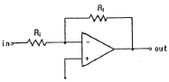
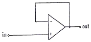
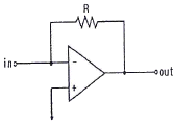
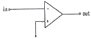
(정답률: 75%)
65. 얇은 층 크로마토그래피(TLC)에서 지연인자(Rf)에 대한 설명으로 틀린 것은?
- 단위가 없다.
- 0~1사이의 값을 갖는다.
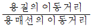
로 나타낸다.- Rf 값은 용매와 온도에 따라 같은 값을 가진다.
(정답률: 78%)
66. 2-hexanone의 질량분석 토막패턴으로 검출되지 않는 화학종은?
- CH3-C≡O+
- CH3-CH=CH2+
- (CH2)(CH3)C=OH+
- CH3-CH2-CH2-CH2+
(정답률: 53%)
67. 중합체 시료를 기준물질과 함께 가열하면서 두 물질의 온도 차이를 나타낸 다음의 시차 열분석도에 대한 설명이 옳은 것으로만 나열된 것은?
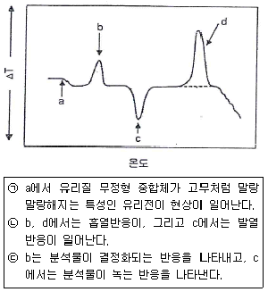
- ㉠, ㉡
- ㉡, ㉢
- ㉠, ㉢
- ㉠, ㉡, ㉢
(정답률: 74%)
68. 조절전위 전기분해에서 각각의 기능과 역할에 대한 설명으로 틀린 것은?
- 전류는 대부분 작업 전극과 보조전극 사이에서 흐른다.
- 기준전극에는 무시할 수 있을 만큼 작은 전류가 흐른다.
- 기준전극의 전위는 저항전위, 농도차 분극, 과전위의 영향을 받지 않게 되어 일정한 전위가 유지된다.
- 일정전위기(potentiostat)는 작업, 보조, 기준전극의 전위를 일정하게 하기 위해서 사용한다.
(정답률: 44%)
69. 시료의 분해반응 및 산화반응과 같은 물리적 변화 측정에 알맞은 열분석법은?
- DSC
- DTA
- TMA
- TGA
(정답률: 52%)
70. 크로마토그래피에서 분류에 대한 설명으로 틀린 것은?
- 고정상 종류에 따라 액체크로마토그래피와 기체크로마토그래피로 분류한다.
- 초임계 유체 크로마토그래피는 분리관법으로 할 수 있다.
- 이온교환 크로마토그래피의 정지상은 이온교환수지이다.
- 액체크로마토그래피는 분리관법 또는 평면법으로 할 수 있다.
(정답률: 64%)
71. 질량분석법을 응용한 2차 이온 질량분석법(SIMS)에 대한 설명으로 틀린 것은?
- 고체 표면의 원자와 분자조성을 결정하는데 유용하다.
- 동적 SIMS는 표면 아래 깊이에 따른 조성 정보를 얻기 위하여 사용된다.
- 통상적으로 사용되는 SIMS를 위한 변환기는 전자증배기, 패러데이컵 또는 영상검출기이다.
- 양이온 측정은 가능하나 음이온 측정이 불가능한 분석법이다.
(정답률: 74%)
72. 원자질량 분석법에서 원자 이온원(ion source)으로 주로 사용되는 것은?
- Nd-YAG 레이저
- 광 방출 다이오드
- 고온 아르곤 플라스마
- 전자 충격(electron impact)
(정답률: 50%)
73. 수소는 물을 전기분해하여 생성시킬 수 있다. 물의 표준생성자유에너지는 △G0f=-237.13kJ/mol이다. 표준조건에서 물을 전기분해할 때 필요한 최소 전압은 얼마인가?
- 0.62V
- 1.23V
- 2.46V
- 3.69V
(정답률: 42%)
74. 이온 억제컬럼을 사용하는 이온크로마토 그래피에서 음이온을 분리할 때 사용하는 이동상은 어떤 화학종을 포함하고 있는가?
- NaCl
- NaHCO3
- NaNO3
- Na2SO4
(정답률: 52%)
75. 순환 전압전류법(Cyclic voltammetry)에 의해 얻어진 순환 전압전류곡선의 해석에 대한 설명으로 틀린 것은?
- 산화전극과 환원전극의 형태가 대칭성에 가까울수록 전기화학적으로 가역적이다.
- 산화봉우리 전류와 환원봉우리 전류의 비가 1에 가까우면 전기화학 반응은 가역적일 가능성이 높다.
- 산화 및 환원전류가 Nernst식을 만족하면 가역적이며 전기화학반응은 매우 빠르게 일어난다.
- 산화봉우리 전압과 환원봉우리 전압의 차는 가능한 커야 전기화학 반응이 가역적일 가능성이 높다.
(정답률: 63%)
76. 기준전극을 사용할 때 주의사항에 대한 설명으로 틀린 것은?
- 전극용액의 오염을 방지하기 위하여 기준전극 내부 용액의 수위가 시료의 수위보다 낮게 유지시켜야 한다.
- 수은, 칼륨, 은과 같은 이온을 정량할 때는 염다리를 사용하면 오차를 줄일 수 있다.
- 기준전극의 염다리는 질산칼륨이나 황산나트륨 같이 전극전위에 방해하지 않는 물질을 포함하면 좋다.
- 기준전극은 셀에서 IR 저항을 감소시키기 위하여 가능한 작업전극에 가까이 위치시킨다.
(정답률: 64%)
77. HPLC에 이용되는 검출기 중 가장 널리 사용되는 검출기의 종류는?
- 형광 검출기
- 굴절률 검출기
- 자외선-가시선 흡수 검출기
- 증발 광산란 검출기
(정답률: 57%)
78. 아래 그림은 퓨리애변환질량분석기를 이용하여 얻은 Cl3C-CH3Cl(1, 1, 1, 2-사염화에탄)의 스펙트럼이다. 각 스펙트럼의 X-축을 주파수와 질량으로 나타내었다. 여기서 131질량 피크는 35Cl3CCH2 이온 때문에, 133질량 피크는 37Cl35Cl2CCH2 이온 때문에 나타난다. 이 스펙트럼에 대한 설명 중 틀린 것은? (단 동위원소 존재비는 35Cl:37Cl=100:33, 12C:13C=100:1.1, 1H:2H=100:0.02이다.)
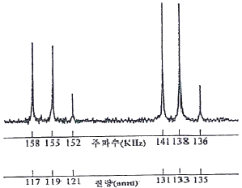
- 135amu 피크는 33Cl75Cl213C13C1H2 이온 때문에 나타난다.
- 117amu 피크는 35Cl3C 이온 때문에 나타난다.
- 119amu 피크는 37Cl35Cl2C 이온 때문에 나타난다.
- 121amu 피크는 37Cl235ClC 이온 때문에 나타난다.
(정답률: 56%)
79. 고성능 액체크로마토그래피(HPLC)에서 분석물질의 분리와 머무름 시간을 조절하는 가장 큰 변수는?
- 시료 주입량
- 이동상의 조성
- 이동상의 유량
- 컬럼의 온도
(정답률: 60%)
80. 기체크로마토그래피(GC)에서 통상적으로 사용되지 않는 검출기는?
- 열전도도 검출기(TCD)
- 불꽃이온화 검출기(FID)
- 전자포착 검출기(ECD)
- 자외선 검출기(UV detector)
(정답률: 68%)
질량 백분율은 용액이나 혼합물에서 각 구성 성분의 질량 비율을 백분율로 나타낸 것이다. 따라서, 각 구성 성분의 질량을 전체 질량으로 나눈 후 100을 곱해주면 된다.
예를 들어, A, B, C 세 가지 성분으로 이루어진 혼합물의 질량 백분율을 구하려면,
A의 질량 백분율 = (A의 질량 ÷ 전체 질량) × 100
B의 질량 백분율 = (B의 질량 ÷ 전체 질량) × 100
C의 질량 백분율 = (C의 질량 ÷ 전체 질량) × 100
따라서, ""이 옳은 답이다.